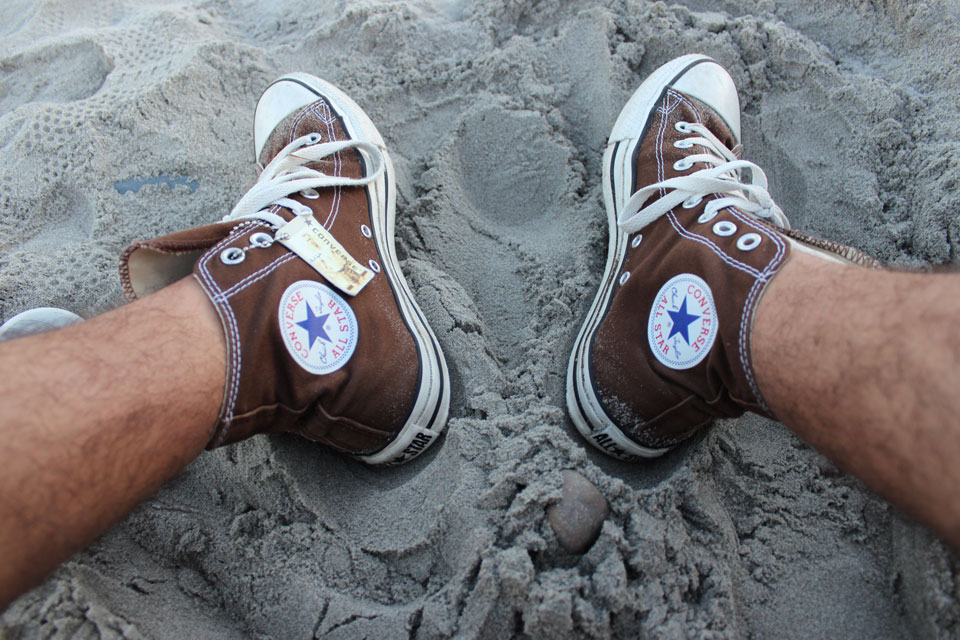

About
Hi, my name is Jonathan and I am a Software Engineer. I like to hack at software and I dabble in hardware, finance, startups, and a whole bunch of other stuff. Below is a random picture of my feet while at the beach. If you have any questions or just want to chat you can email me at jonathan.lebron [at] outlook.com. You can also follow me on twitter at jlebron or check out some random stuff of mine on github as jonathanlebron. Thanks for stopping by (I promise i'll make this site look cooler when I have more time).
